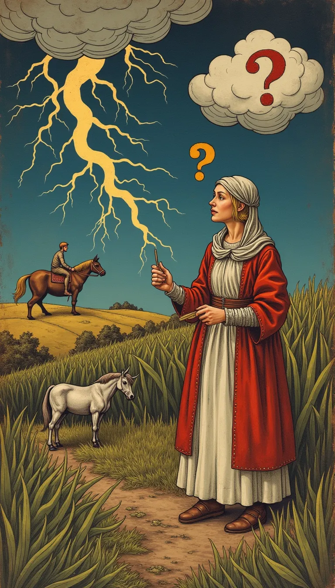
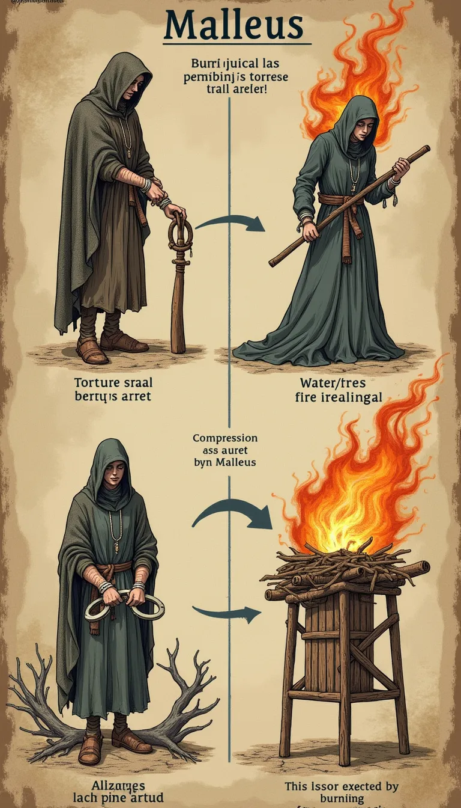

Malleus Maleficarum: Fakt oder Fiktion?
Eine kritische (oder auch nicht) Untersuchung des berüchtigten
Buches.
Der Mann hinter dem Hammer: Visionär oder Fanatiker?
- Ein Dominikaner mit einer Mission.
- Überzeugt vom Kampf gegen das Böse.
-
Sah überall Teufelswerk (Frauen, die lesen? Frauen, die
kämpfen?).
-
Hatte... Schwierigkeiten, seine Ansichten durchzusetzen.
Argumentation im Buch: Warum Frauen? (Eva war schuld!)
-
"Fe = Fides (Glaube), Minus = Weniger" -> Frau = weniger
Glaube? (Eine tatsächliche "Etymologie" aus dem Buch)
- Eva und die Schlange: Der Sündenfall als Blaupause.
-
Klatschsucht, Wissensdurst, Unbeständigkeit – alles
verdächtig!
-
Gegenargument: Sind Männer nicht auch fehlbar (Adam aß den
Apfel!)?

Wetterzauber & Schadensmagie: Die Macht der Hexen?
-
Hagelstürme? Missernten? Krankes Vieh? -> Klarer Fall von
Hexerei!
-
Wie machen sie das? (Pakt mit dem Teufel, obskure Rituale).
-
Beweise: Hörensagen, Geständnisse (unter Folter), seltsame
Wolkenformationen.
-
Alternative Erklärung: Natürliche Wetterphänomene? Zufall?
(Langweilig!)
Verträge mit dem Bösen: Kleingedrucktes inklusive?
-
Angeblich: Abschwörung Gottes, Huldigung Satans, intime
Beziehungen...
-
Gegenleistung: Magische Kräfte, Reichtum, Macht (selten
belegt).
-
Das Hexenmal: Ein Zeichen auf der Haut, unempfindlich gegen
Schmerz (muss gesucht werden!).
-
Klingt plausibel, oder? (Fragt mal jemanden, der gefoltert
wurde).
Indizien & Beweise laut Malleus Maleficarum
- Unfähigkeit zu weinen.
- Rote Haare (traditionelles Klischee).
- Besitz einer schwarzen Katze.
- Kenntnisse in Kräuterheilkunde.
- Lesen können.
- Unabhängiges Verhalten.
- Im Grunde: Jedes ungewöhnliche Verhalten einer Frau.

Was tun? Der "Hammer" schlägt zu!
- Anzeige (anonym möglich!).
-
Verhaftung & Verhör (mit "peinlicher Befragung", d.h. Folter).
- Wasserprobe, Feuerprobe (Gottesurteile).
- Ziel: Geständnis und Nennung weiterer Hexen.
- Urteil: Meistens Tod auf dem Scheiterhaufen.
Vom Manuskript zur Massenhysterie
- Weite Verbreitung dank Buchdruck.
- Wurde zur "Bibel" der Hexenjäger.
- Legitimierte Verfolgung und Folter über Jahrhunderte.
-
Tausende unschuldige Opfer (Männer und Frauen, aber
überwiegend Frauen).
- "Ein Buch voller Hass... Lügen und Spinnereien."
Gab es Widerstand? Vernunft vs. Wahn
- Nicht alle glaubten an Hexerei oder Kramers Methoden.
- Einige Theologen und Juristen äußerten Zweifel.
- Mutige Menschen, die halfen.
- Aber: Die Angst und der Aberglaube waren oft stärker.
Das Urteil der Geschichte: Ein gefährliches Machwerk
- Der Hexenhammer ist KEIN historisch akkurates Werk.
-
Er spiegelt die Ängste, Misogynie und den Aberglauben seiner
Zeit wider.
- Seine "Wahrheit" lag in seiner schrecklichen Wirkung.
-
Lehren für heute: Vorsicht vor Fanatismus, Hasspropaganda und
Sündenböcken!